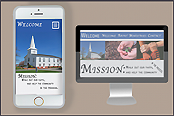

Click Here
Church Template

For a class project, I developed a template for a church using HTML5, CSS3, and JavaScript. I created a donate button that will lead your supporters to a PayPal account in which they can give to your organization. With JavaScript, I
developed an interactive FAQ page that will make your page's readability. Along with the interactive FAQ page, there is an embedded video for the youth ministries page and a carousel slideshow on the welcome page that can be used to
highlight things that are going on in your church.